Ewerthon Jose Kutz
/
Filmes, Séries e Podcasts
Search
Try Notion
Drag image to reposition
Filmes, Séries e Podcasts
Top 20
The Count of Monte Cristo (2002) - IMDb
Directed by Kevin Reynolds. With Jim Caviezel, Guy Pearce, Richard Harris, James Frain. A young man, falsely imprisoned by his jealous "friend", escapes and uses a hidden treasure to exact his revenge.
https://www.imdb.com/title/tt0245844/?ref_=nv_sr_1?ref_=nv_sr_1
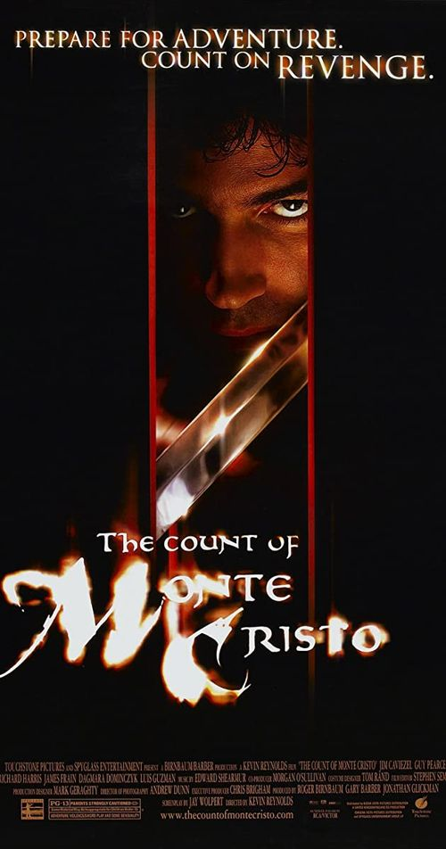
The Godfather (1972) - IMDb
Directed by Francis Ford Coppola. With Marlon Brando, Al Pacino, James Caan, Diane Keaton. The aging patriarch of an organized crime dynasty transfers control of his clandestine empire to his reluctant son.
https://www.imdb.com/title/tt0068646/?ref_=ttls_li_tt
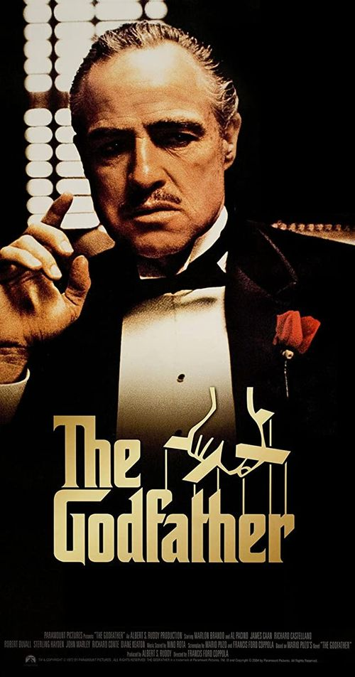
Interstellar (2014) - IMDb
Directed by Christopher Nolan. With Matthew McConaughey, Anne Hathaway, Jessica Chastain, Mackenzie Foy. A team of explorers travel through a wormhole in space in an attempt to ensure humanity's survival.
https://www.imdb.com/title/tt0816692/?ref_=ttls_li_tt
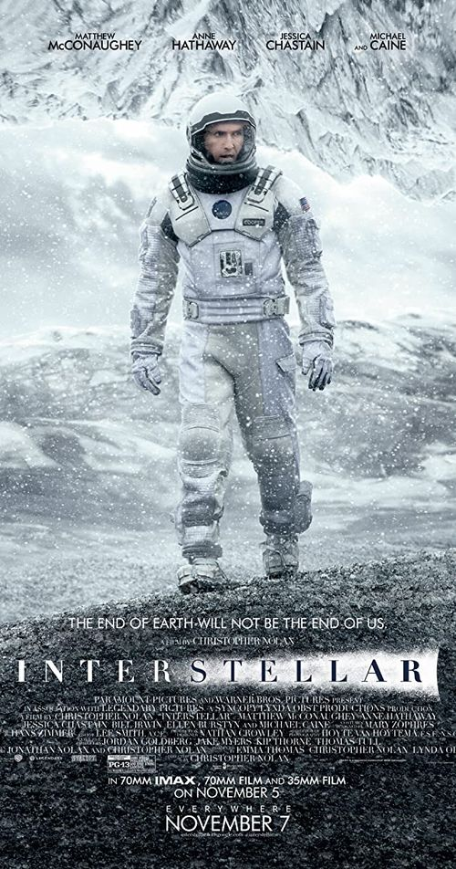
Moneyball (2011) - IMDb
Directed by Bennett Miller. With Brad Pitt, Robin Wright, Jonah Hill, Philip Seymour Hoffman. Oakland A's general manager Billy Beane's successful attempt to assemble a baseball team on a lean budget by employing computer-generated analysis to acquire new players.
https://www.imdb.com/title/tt1210166/?ref_=ttls_li_tt
Spotlight (2015) - IMDb
Directed by Tom McCarthy. With Mark Ruffalo, Michael Keaton, Rachel McAdams, Liev Schreiber. The true story of how the Boston Globe uncovered the massive scandal of child molestation and cover-up within the local Catholic Archdiocese, shaking the entire Catholic Church to its core.
https://www.imdb.com/title/tt1895587/?ref_=ttls_li_tt
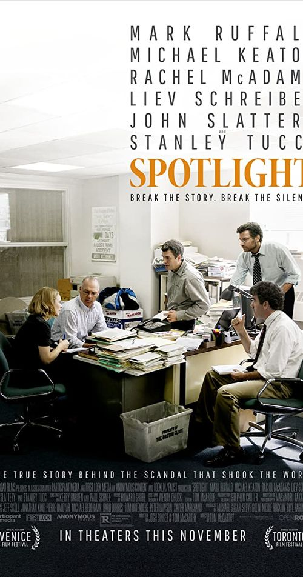
The Two Popes (2019) - IMDb
Directed by Fernando Meirelles. With Anthony Hopkins, Jonathan Pryce, Juan Minujín, Luis Gnecco. Behind Vatican walls, the conservative Pope Benedict XVI and the liberal future Pope Francis must find common ground to forge a new path for the Catholic Church.
https://www.imdb.com/title/tt8404614/
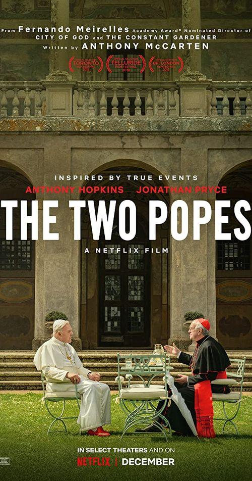
Rudy (1993) - IMDb
Directed by David Anspaugh. With Sean Astin, Jon Favreau, Ned Beatty, Greta Lind. Rudy has always been told that he was too small to play college football. But he is determined to overcome the odds and fulfill his dream of playing for Notre Dame.
https://www.imdb.com/title/tt0108002/?ref_=nv_sr_srsg_0
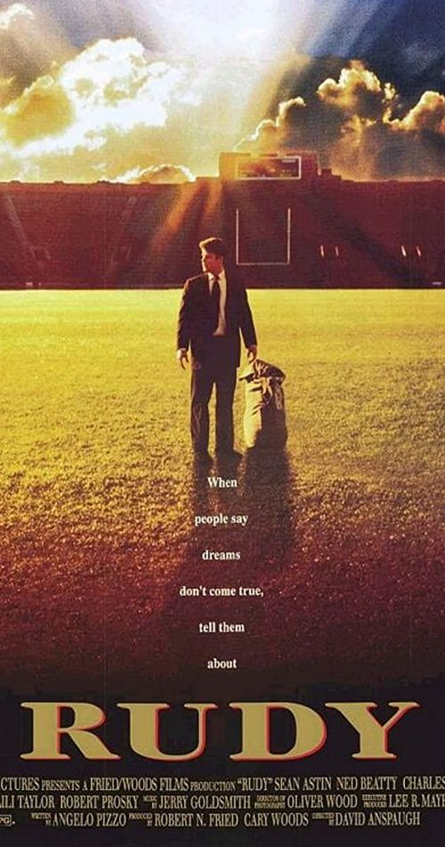
The Imitation Game (2014) - IMDb
Directed by Morten Tyldum. With Benedict Cumberbatch, Keira Knightley, Matthew Goode, Allen Leech. During World War II, the English mathematical genius Alan Turing tries to crack the German Enigma code with help from fellow mathematicians.
https://www.imdb.com/title/tt2084970/?ref_=ttls_li_tt
Slumdog Millionaire (2008) - IMDb
Directed by Danny Boyle, Loveleen Tandan. With Dev Patel, Freida Pinto, Saurabh Shukla, Anil Kapoor. A Mumbai teenager reflects on his life after being accused of cheating on the Indian version of "Who Wants to be a Millionaire?"
https://www.imdb.com/title/tt1010048/?ref_=nv_sr_1?ref_=nv_sr_1
Dallas Buyers Club (2013) - IMDb
Directed by Jean-Marc Vallée. With Matthew McConaughey, Jennifer Garner, Jared Leto, Steve Zahn. In 1985 Dallas, electrician and hustler Ron Woodroof works around the system to help AIDS patients get the medication they need after he is diagnosed with the disease.
https://www.imdb.com/title/tt0790636/?ref_=ttls_li_tt
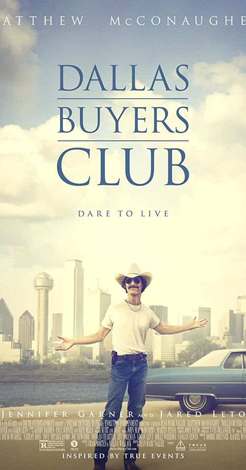
Wonder (2017) - IMDb
Directed by Stephen Chbosky. With Jacob Tremblay, Owen Wilson, Izabela Vidovic, Julia Roberts. Based on the New York Times bestseller, this movie tells the incredibly inspiring and heartwarming story of August Pullman, a boy with facial differences who enters the fifth grade, attending a mainstream elementary school for the first time.
https://www.imdb.com/title/tt2543472/?ref_=nv_sr_1?ref_=nv_sr_1
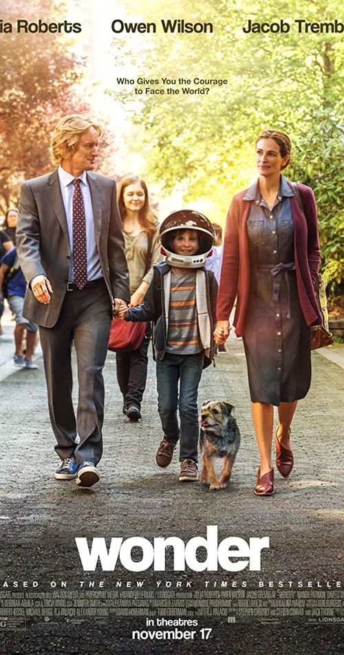
Green Book (2018) - IMDb
Directed by Peter Farrelly. With Viggo Mortensen, Mahershala Ali, Linda Cardellini, Sebastian Maniscalco. A working-class Italian-American bouncer becomes the driver of an African-American classical pianist on a tour of venues through the 1960s American South.
https://www.imdb.com/title/tt6966692/?ref_=nv_sr_1?ref_=nv_sr_1
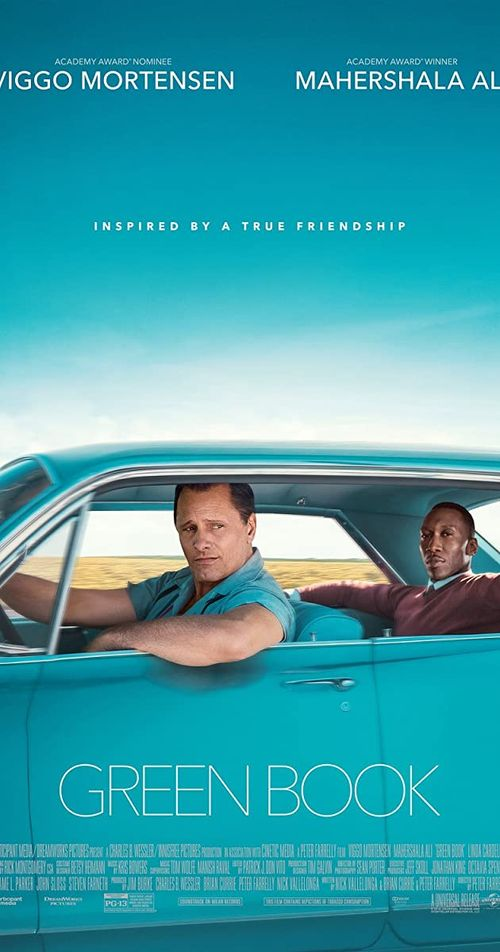
The Big Short (2015) - IMDb
Won 1 Oscar. Another 37 wins & 80 nominations. See more awards " Three separate but parallel stories of the U.S mortgage housing crisis of 2005 are told. Michael Burry, an eccentric ex-physician turned one-eyed Scion Capital hedge fund manager, has traded traditional office attire for shorts, bare feet and a Supercuts haircut.
https://www.imdb.com/title/tt1596363/
Jojo Rabbit (2019) - IMDb
Won 1 Oscar. Another 32 wins & 146 nominations. See more awards " A World War II satire that follows a lonely German boy named Jojo (Roman Griffin Davis) whose world view is turned upside down when he discovers his single mother (Scarlett Johansson) is hiding a young Jewish girl (Thomasin McKenzie) in their attic.
https://www.imdb.com/title/tt2584384/?ref_=ttls_li_tt
Inglourious Basterds (2009) - IMDb
Inglourious Basterds: Directed by Quentin Tarantino. With Brad Pitt, Mélanie Laurent, Christoph Waltz, Eli Roth. In Nazi-occupied France during World War II, a plan to assassinate Nazi leaders by a group of Jewish U.S. soldiers coincides with a theatre owner's vengeful plans for the same.
https://www.imdb.com/title/tt0361748/?ref_=nv_sr_srsg_0
Whiplash (2014) - IMDb
Directed by Damien Chazelle. With Miles Teller, J.K. Simmons, Melissa Benoist, Paul Reiser. A promising young drummer enrolls at a cut-throat music conservatory where his dreams of greatness are mentored by an instructor who will stop at nothing to realize a student's potential.
https://www.imdb.com/title/tt2582802/?ref_=ttls_li_tt
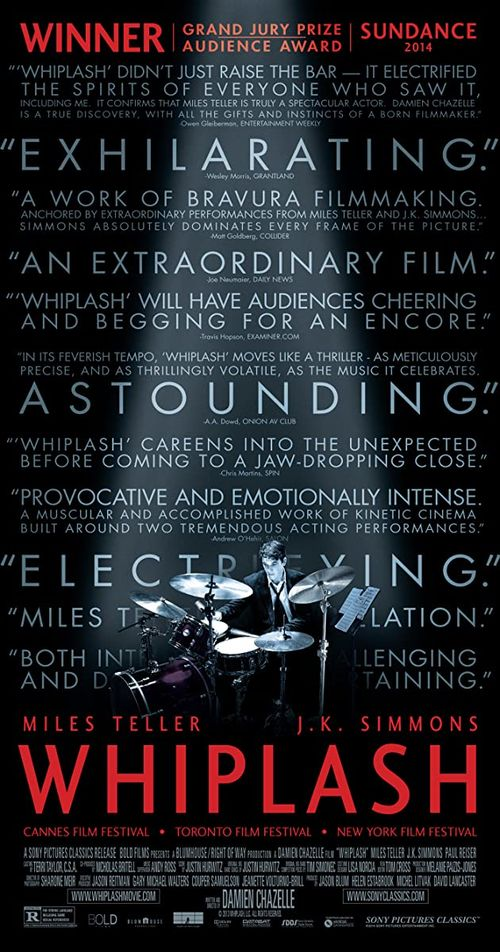
Crouching Tiger, Hidden Dragon (2000) - IMDb
Directed by Ang Lee. With Yun-Fat Chow, Michelle Yeoh, Ziyi Zhang, Chen Chang. A young Chinese warrior steals a sword from a famed swordsman and then escapes into a world of romantic adventure with a mysterious man in the frontier of the nation.
https://www.imdb.com/title/tt0190332/?ref_=ttls_li_tt
The Social Network (2010) - IMDb
Directed by David Fincher. With Jesse Eisenberg, Andrew Garfield, Justin Timberlake, Rooney Mara. Harvard student Mark Zuckerberg creates the social networking site. That would become known as Facebook but is later sued by two brothers who claimed he stole their idea, and the co-founder who was later squeezed out of the business.
https://www.imdb.com/title/tt1285016/?ref_=ttls_li_tt
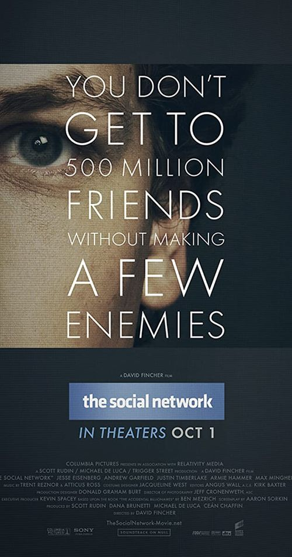
Gladiator (2000) - IMDb
Directed by Ridley Scott. With Russell Crowe, Joaquin Phoenix, Connie Nielsen, Oliver Reed. A former Roman General sets out to exact vengeance against the corrupt emperor who murdered his family and sent him into slavery.
https://www.imdb.com/title/tt0172495/?ref_=nv_sr_1?ref_=nv_sr_1
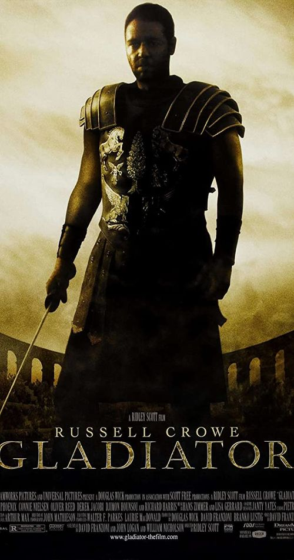
Her (2013) - IMDb
Directed by Spike Jonze. With Joaquin Phoenix, Amy Adams, Scarlett Johansson, Rooney Mara. In a near future, a lonely writer develops an unlikely relationship with an operating system designed to meet his every need.
https://www.imdb.com/title/tt1798709/?ref_=ttls_li_tt
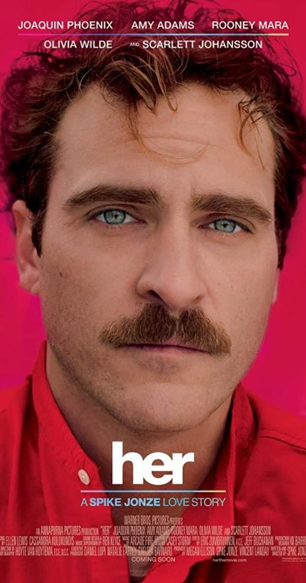
The Prestige (2006) - IMDb
Directed by Christopher Nolan. With Christian Bale, Hugh Jackman, Scarlett Johansson, Michael Caine. After a tragic accident, two stage magicians engage in a battle to create the ultimate illusion while sacrificing everything they have to outwit each other.
https://www.imdb.com/title/tt0482571/?ref_=nv_sr_1?ref_=nv_sr_1
City of God (2002) - IMDb
Directed by Fernando Meirelles, Kátia Lund. With Alexandre Rodrigues, Leandro Firmino, Matheus Nachtergaele, Phellipe Haagensen. In the slums of Rio, two kids' paths diverge as one struggles to become a photographer and the other a kingpin.
https://www.imdb.com/title/tt0317248/?ref_=nv_sr_1?ref_=nv_sr_1
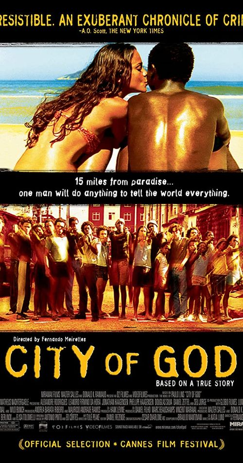
Franquias
Harry Potter and the Sorcerer's Stone (2001) - IMDb
Directed by Chris Columbus. With Daniel Radcliffe, Rupert Grint, Richard Harris, Maggie Smith. An orphaned boy enrolls in a school of wizardry, where he learns the truth about himself, his family and the terrible evil that haunts the magical world.
https://www.imdb.com/title/tt0241527/?ref_=nv_sr_1?ref_=nv_sr_1
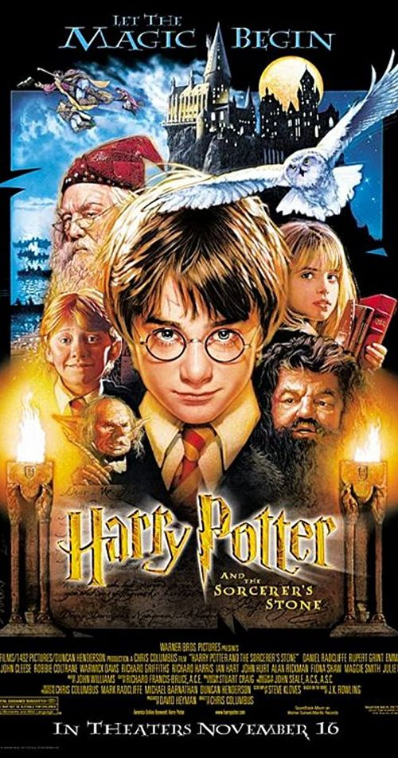
The Matrix (1999) - IMDb
Directed by Lana Wachowski, Lilly Wachowski. With Keanu Reeves, Laurence Fishburne, Carrie-Anne Moss, Hugo Weaving. A computer hacker learns from mysterious rebels about the true nature of his reality and his role in the war against its controllers.
https://www.imdb.com/title/tt0133093/?ref_=ttls_li_tt
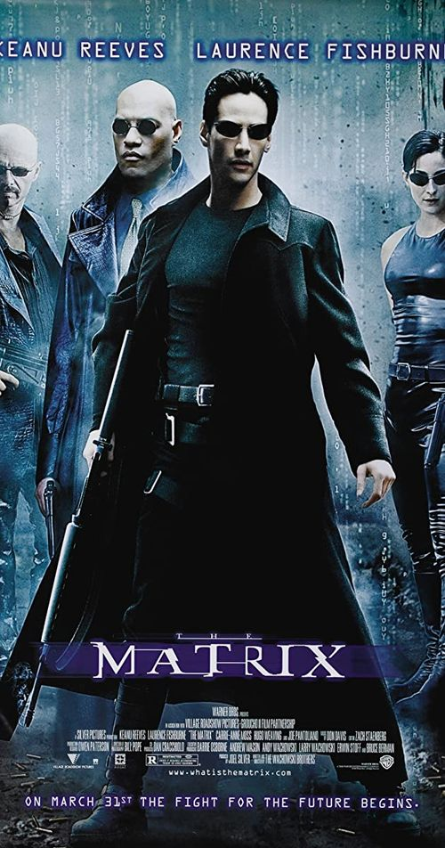
The Hunger Games (2012) - IMDb
Directed by Gary Ross. With Jennifer Lawrence, Josh Hutcherson, Liam Hemsworth, Stanley Tucci. Katniss Everdeen voluntarily takes her younger sister's place in the Hunger Games: a televised competition in which two teenagers from each of the twelve Districts of Panem are chosen at random to fight to the death.
https://www.imdb.com/title/tt1392170/?ref_=nv_sr_1?ref_=nv_sr_1
The Lord of the Rings: The Fellowship of the Ring (2001) - IMDb
Directed by Peter Jackson. With Elijah Wood, Ian McKellen, Orlando Bloom, Sean Bean. A meek Hobbit from the Shire and eight companions set out on a journey to destroy the powerful One Ring and save Middle-earth from the Dark Lord Sauron.
https://www.imdb.com/title/tt0120737/?ref_=nv_sr_1?ref_=nv_sr_1
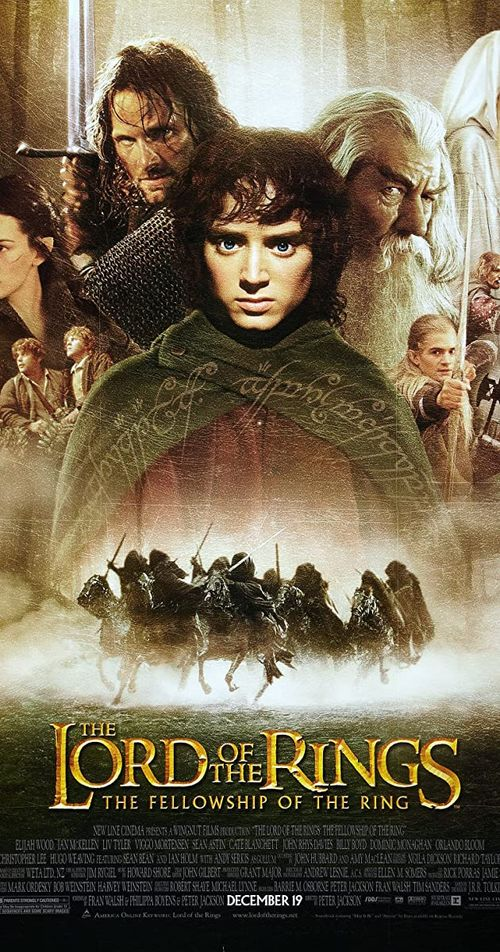
Star Wars: Episode I - The Phantom Menace (1999) - IMDb
Star Wars: Episode I - The Phantom Menace: Directed by George Lucas. With Liam Neeson, Ewan McGregor, Natalie Portman, Jake Lloyd. Two Jedi escape a hostile blockade to find allies and come across a young boy who may bring balance to the Force, but the long dormant Sith resurface to claim their original glory.
https://www.imdb.com/title/tt0120915/?ref_=fn_al_tt_2
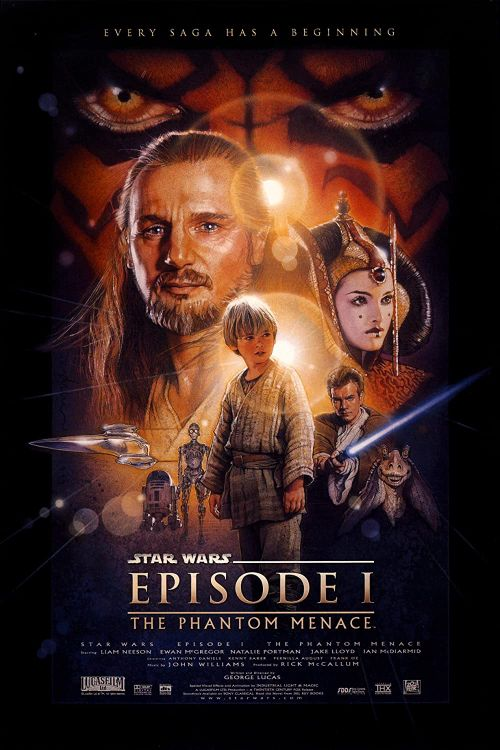
The Avengers (2012) - IMDb
The Avengers: Directed by Joss Whedon. With Robert Downey Jr., Chris Evans, Mark Ruffalo, Chris Hemsworth. Earth's mightiest heroes must come together and learn to fight as a team if they are going to stop the mischievous Loki and his alien army from enslaving humanity.
https://www.imdb.com/title/tt0848228/?ref_=fn_al_tt_1
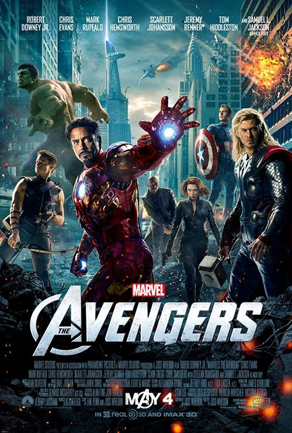
Top 10
Breaking Bad (TV Series 2008-2013) - IMDb
Created by Vince Gilligan. With Bryan Cranston, Aaron Paul, Anna Gunn, Betsy Brandt. A high school chemistry teacher diagnosed with inoperable lung cancer turns to manufacturing and selling methamphetamine in order to secure his family's future.
https://www.imdb.com/title/tt0903747/?ref_=adv_li_tt
The Office (TV Series 2005-2013) - IMDb
Created by Greg Daniels, Ricky Gervais, Stephen Merchant. With Steve Carell, Jenna Fischer, John Krasinski, Rainn Wilson. A mockumentary on a group of typical office workers, where the workday consists of ego clashes, inappropriate behavior, and tedium.
https://www.imdb.com/title/tt0386676/?ref_=adv_li_tt
Chernobyl (TV Mini-Series 2019) - IMDb
Created by Craig Mazin. With Jessie Buckley, Jared Harris, Stellan Skarsgård, Adam Nagaitis. In April 1986, an explosion at the Chernobyl nuclear power plant in the Union of Soviet Socialist Republics becomes one of the world's worst man-made catastrophes.
https://www.imdb.com/title/tt7366338/?pf_rd_m=A2FGELUUNOQJNL&pf_rd_p=12230b0e-0e00-43ed-9e59-8d5353703cce&pf_rd_r=W0CE66G2V758YE82NTG6&pf_rd_s=center-1&pf_rd_t=15506&pf_rd_i=toptv&ref_=chttvtp_tt_1
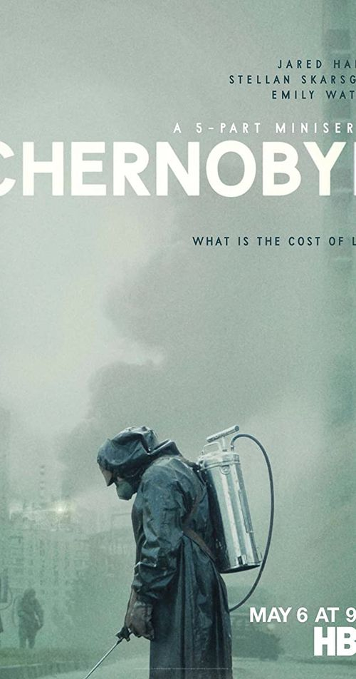
Game of Thrones (TV Series 2011-2019) - IMDb
Created by David Benioff, D.B. Weiss. With Emilia Clarke, Peter Dinklage, Kit Harington, Lena Headey. Nine noble families fight for control over the mythical lands of Westeros, while an ancient enemy returns after being dormant for thousands of years.
https://www.imdb.com/title/tt0944947/?ref_=adv_li_tt
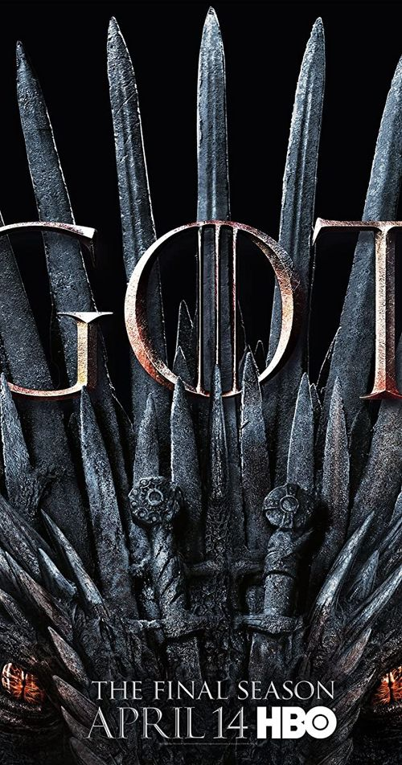
Westworld (TV Series 2016- ) - IMDb
Westworld: Created by Lisa Joy, Jonathan Nolan. With Thandiwe Newton, Jeffrey Wright, Ed Harris, Evan Rachel Wood. At the intersection of the near future and the reimagined past, waits a world in which every human appetite can be indulged without consequence.
https://www.imdb.com/title/tt0475784/?ref_=nv_sr_srsg_0
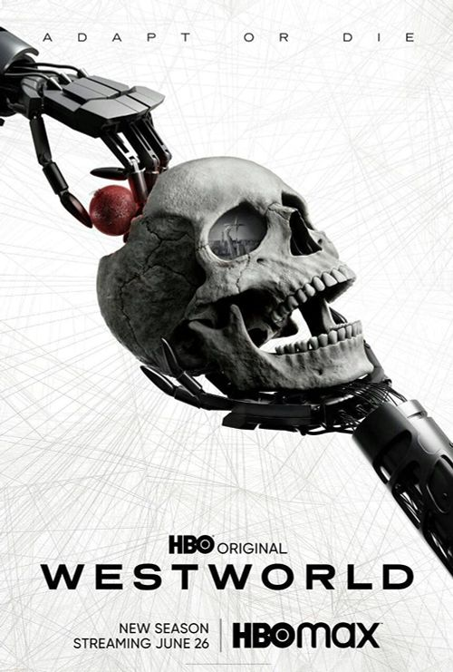
Band of Brothers (TV Mini-Series 2001) - IMDb
With Scott Grimes, Damian Lewis, Ron Livingston, Shane Taylor. The story of Easy Company of the U.S. Army 101st Airborne Division, and their mission in World War II Europe, from Operation Overlord, through V-J Day.
https://www.imdb.com/title/tt0185906/?pf_rd_m=A2FGELUUNOQJNL&pf_rd_p=12230b0e-0e00-43ed-9e59-8d5353703cce&pf_rd_r=W0CE66G2V758YE82NTG6&pf_rd_s=center-1&pf_rd_t=15506&pf_rd_i=toptv&ref_=chttvtp_tt_3
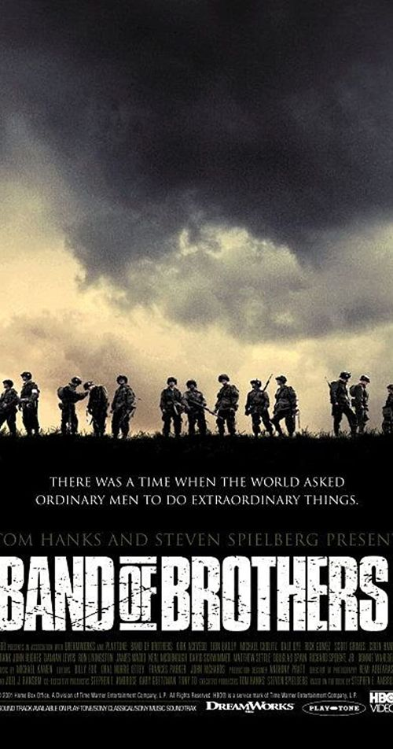
Monty Python's Flying Circus (TV Series 1969-1974) - IMDb
Created by Graham Chapman, Eric Idle, Terry Jones. With Graham Chapman, John Cleese, Terry Gilliam, Eric Idle. The original surreal sketch comedy showcase for the Monty Python troupe.
https://www.imdb.com/title/tt0063929/?ref_=ttls_li_tt
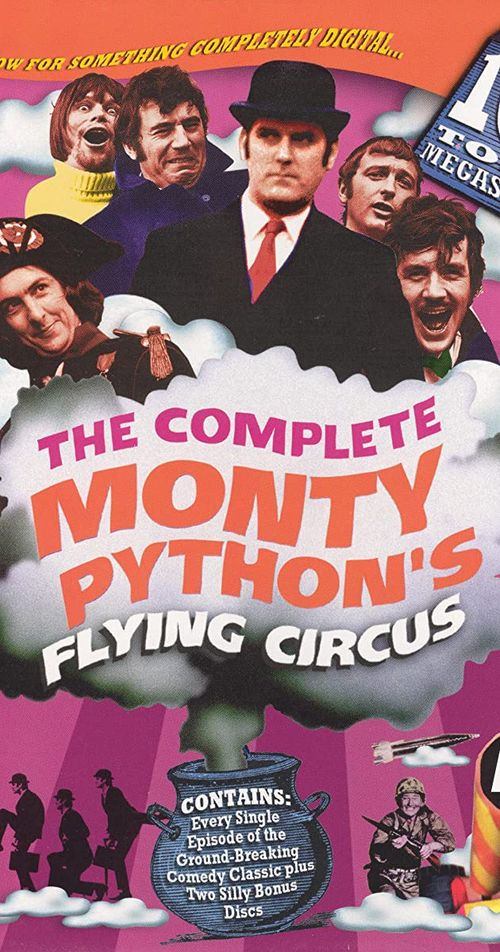
House of Cards (TV Series 2013-2018) - IMDb
Created by Beau Willimon. With Kevin Spacey, Michel Gill, Robin Wright, Kate Mara. A Congressman works with his equally conniving wife to exact revenge on the people who betrayed him.
https://www.imdb.com/title/tt1856010/?ref_=adv_li_tt
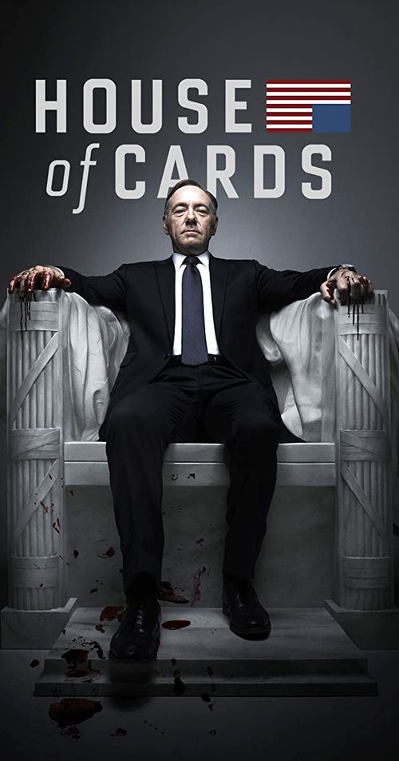
Black Mirror (TV Series 2011-2019) - IMDb
An anthology series exploring a twisted, high-tech multiverse where humanity's greatest innovations and darkest instincts collide. An anthology series exploring a twisted, high-tech multiverse where humanity's greatest innovations and darkest instincts collide. An anthology series exploring a twisted, high-tech multiverse where humanity's greatest innovations and darkest instincts collide.
https://www.imdb.com/title/tt2085059/?ref_=fn_al_tt_1
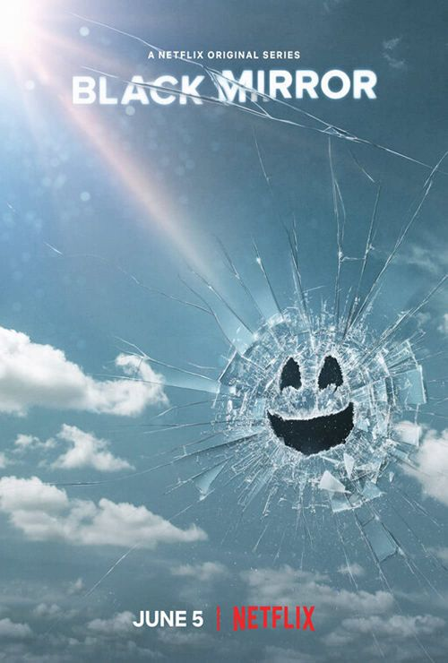
Succession (TV Series 2018- ) - IMDb
Succession: Created by Jesse Armstrong. With Nicholas Braun, Peter Friedman, Matthew Macfadyen, Brian Cox. The Roy family is known for controlling the biggest media and entertainment company in the world. However, their world changes when their father steps down from the company.
https://www.imdb.com/title/tt7660850/?ref_=fn_al_tt_1
Top 10
Lex Fridman Podcast
Listen to Lex Fridman Podcast on Spotify.
https://open.spotify.com/show/2MAi0BvDc6GTFvKFPXnkCL
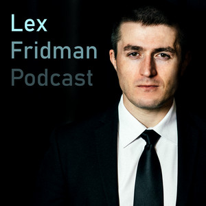
NerdCast
Listen to NerdCast on Spotify.
https://open.spotify.com/show/22Wgt4ASeaw8mmoqAWNUn1
Noites Gregas
Listen to Noites Gregas on Spotify.
https://open.spotify.com/show/5Z3h3reDjsf7DxTVeitnu2
Like a Boss
Listen to Like a Boss on Spotify.
https://open.spotify.com/show/5qFSRB3x4SP9xZgr4my7fO
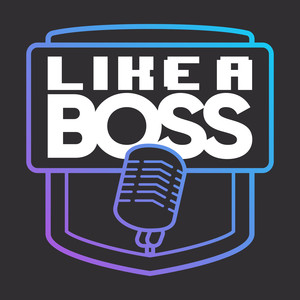
Bola Presa
Listen to Bola Presa on Spotify.
https://open.spotify.com/show/38elYy8IZSyOkSBZqFFQYv
Let's Data
Listen to Let's Data on Spotify.
https://open.spotify.com/show/0VsNN95jsJVRS424eCFDlg
The Joe Rogan Experience
Listen to The Joe Rogan Experience on Spotify.
https://open.spotify.com/show/4rOoJ6Egrf8K2IrywzwOMk
Autoconsciente Podcast
Listen to Autoconsciente Podcast on Spotify.
https://open.spotify.com/show/3l28wC5LyiiW2EdxgKW1cE
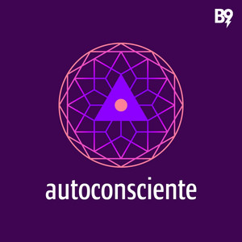
Do Zero ao Topo
Listen to Do Zero ao Topo on Spotify.
https://open.spotify.com/show/48ljM9qIbODhemJ7lLGjeR
Data Hackers
Listen to Data Hackers on Spotify.
https://open.spotify.com/show/1oMIHOXsrLFENAeM743g93

 Top 20 Franquias Top 10 Top 10
Top 20 Franquias Top 10 Top 10

 Top 20 Franquias Top 10 Top 10
Top 20 Franquias Top 10 Top 10